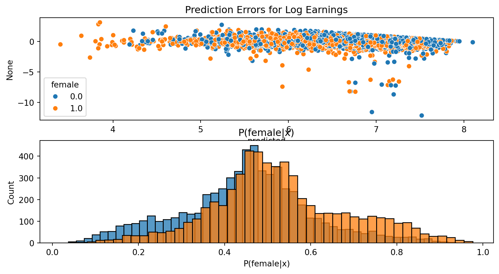

In matching we said that we could use flexible machine learning estimators for \(\Er[Y|D,X]\) and \(P(D=1|X)\) and plug them into the doubly robust estimator
First order condition at \(f_\theta = f_0\) gives \[
0 = \Er\left[ (y - f_0(x))\partial_x \log p(x) + (\theta - f_0'(x)) \right]
\]
Orthogonal scores via Two Other Methods
“Orthogonal” suggests ideas from linear algebra will useful, and they are
Projection: take orthogonal to \(\eta_0\) projection of moments
Riesz representer
Example: Gender Wage Gap
Data
imports
import matplotlib.pyplot as pltimport numpy as npimport pandas as pdfrom sklearn.model_selection import cross_val_predictfrom sklearn import linear_modelfrom sklearn.preprocessing import PolynomialFeaturesimport statsmodels as smimport statsmodels.formula.api as smffrom statsmodels.iolib.summary2 import summary_col
cpsall = pd.read_stata("https://www.nber.org/morg/annual/morg20.dta")# take subset of data just to reduce computation timecps = cpsall.sample(30000, replace=False, random_state=0)cps.describe()
hurespli
hhnum
county
centcity
smsastat
icntcity
smsa04
relref95
age
spouse
...
recnum
year
ym_file
ym
ch02
ch35
ch613
ch1417
ch05
ihigrdc
count
29998.000000
30000.000000
30000.000000
24785.000000
29699.000000
3775.000000
30000.000000
30000.000000
30000.000000
15421.000000
...
30000.000000
30000.0
30000.000000
30000.000000
30000.000000
30000.000000
30000.000000
30000.000000
30000.000000
20929.000000
mean
1.248017
1.050267
25.579267
1.926811
1.186942
1.399735
3.691300
42.792200
48.781800
1.574347
...
200364.281250
2020.0
725.461367
716.238567
0.053967
0.064967
0.136967
0.081267
0.099833
12.443547
std
0.617033
0.238765
61.435104
0.718238
0.389872
0.987978
2.592906
3.830515
18.922986
0.675013
...
116372.054688
0.0
3.498569
6.903731
0.225956
0.246471
0.343818
0.273249
0.299783
2.441900
min
0.000000
1.000000
0.000000
1.000000
1.000000
1.000000
0.000000
40.000000
16.000000
1.000000
...
23.000000
2020.0
720.000000
705.000000
0.000000
0.000000
0.000000
0.000000
0.000000
0.000000
25%
1.000000
1.000000
0.000000
1.000000
1.000000
1.000000
0.000000
40.000000
33.000000
1.000000
...
98957.250000
2020.0
722.000000
710.000000
0.000000
0.000000
0.000000
0.000000
0.000000
12.000000
50%
1.000000
1.000000
0.000000
2.000000
1.000000
1.000000
4.000000
41.000000
49.000000
2.000000
...
200032.500000
2020.0
725.000000
716.000000
0.000000
0.000000
0.000000
0.000000
0.000000
12.000000
75%
1.000000
1.000000
27.000000
2.000000
1.000000
1.000000
6.000000
42.000000
64.000000
2.000000
...
302111.750000
2020.0
729.000000
722.000000
0.000000
0.000000
0.000000
0.000000
0.000000
14.000000
max
13.000000
4.000000
810.000000
3.000000
2.000000
7.000000
7.000000
59.000000
85.000000
9.000000
...
401132.000000
2020.0
731.000000
728.000000
1.000000
1.000000
1.000000
1.000000
1.000000
18.000000
8 rows × 55 columns
Partial Linear Model
def partial_linear(y, d, X, yestimator, destimator, folds=3):"""Estimate the partially linear model y = d*C + f(x) + e Parameters ---------- y : array_like vector of outcomes d : array_like vector or matrix of regressors of interest X : array_like matrix of controls mlestimate : Estimator object for partialling out X. Must have ‘fit’ and ‘predict’ methods. folds : int Number of folds for cross-fitting Returns ------- ols : statsmodels regression results containing estimate of coefficient on d. yhat : cross-fitted predictions of y dhat : cross-fitted predictions of d """# we want predicted probabilities if y or d is discrete ymethod ="predict"ifFalse==getattr(yestimator, "predict_proba",False) else"predict_proba" dmethod ="predict"ifFalse==getattr(destimator, "predict_proba",False) else"predict_proba"# get the predictions yhat = cross_val_predict(yestimator,X,y,cv=folds,method=ymethod) dhat = cross_val_predict(destimator,X,d,cv=folds,method=dmethod) ey = np.array(y - yhat) ed = np.array(d - dhat) ols = sm.regression.linear_model.OLS(ey,ed).fit(cov_type='HC0')return(ols, yhat, dhat)
Notes: [1] R² is computed without centering (uncentered) since the model does not contain a constant. [2] Standard Errors are heteroscedasticity robust (HC0)
Examining Predictions
Code
import seaborn as sns# Visualize predictionsdef preddf(pl): df = pd.DataFrame({"logearn":logearn,"predicted":pl[1],"female":female,"P(female|x)":pl[2]})return(df)def plotpredictions(df) : fig, ax = plt.subplots(2,1) plt.figure() sns.scatterplot(x = df.predicted, y = df.logearn-df.predicted, hue=df.female, ax=ax[0]) ax[0].set_title("Prediction Errors for Log Earnings") sns.histplot(df["P(female|x)"][df.female==0], kde =False, label ="Male", ax=ax[1]) sns.histplot(df["P(female|x)"][df.female==1], kde =False, label ="Female", ax=ax[1]) ax[1].set_title('P(female|x)')return(fig)fig=plotpredictions(preddf(pl_lasso))fig.show()
[LightGBM] [Info] Total Bins 292
[LightGBM] [Info] Number of data points in the train set: 9630, number of used features: 28
[LightGBM] [Info] Start training from score 6.719951
[LightGBM] [Info] Total Bins 290
[LightGBM] [Info] Number of data points in the train set: 9630, number of used features: 28
[LightGBM] [Info] Start training from score 6.715158
[LightGBM] [Info] Total Bins 292
[LightGBM] [Info] Number of data points in the train set: 9630, number of used features: 28
[LightGBM] [Info] Start training from score 6.719371
[LightGBM] [Info] Total Bins 289
[LightGBM] [Info] Number of data points in the train set: 9631, number of used features: 28
[LightGBM] [Info] Start training from score 6.719395
[LightGBM] [Info] Total Bins 289
[LightGBM] [Info] Number of data points in the train set: 9631, number of used features: 28
[LightGBM] [Info] Start training from score 6.714159
[LightGBM] [Info] Number of positive: 4711, number of negative: 4919
[LightGBM] [Info] Total Bins 292
[LightGBM] [Info] Number of data points in the train set: 9630, number of used features: 28
[LightGBM] [Info] [binary:BoostFromScore]: pavg=0.489200 -> initscore=-0.043205
[LightGBM] [Info] Start training from score -0.043205
[LightGBM] [Info] Number of positive: 4647, number of negative: 4983
[LightGBM] [Info] Total Bins 290
[LightGBM] [Info] Number of data points in the train set: 9630, number of used features: 28
[LightGBM] [Info] [binary:BoostFromScore]: pavg=0.482555 -> initscore=-0.069810
[LightGBM] [Info] Start training from score -0.069810
[LightGBM] [Info] Number of positive: 4701, number of negative: 4929
[LightGBM] [Info] Total Bins 292
[LightGBM] [Info] Number of data points in the train set: 9630, number of used features: 28
[LightGBM] [Info] [binary:BoostFromScore]: pavg=0.488162 -> initscore=-0.047361
[LightGBM] [Info] Start training from score -0.047361
[LightGBM] [Info] Number of positive: 4678, number of negative: 4953
[LightGBM] [Info] Total Bins 289
[LightGBM] [Info] Number of data points in the train set: 9631, number of used features: 28
[LightGBM] [Info] [binary:BoostFromScore]: pavg=0.485723 -> initscore=-0.057123
[LightGBM] [Info] Start training from score -0.057123
[LightGBM] [Info] Number of positive: 4703, number of negative: 4928
[LightGBM] [Info] Total Bins 289
[LightGBM] [Info] Number of data points in the train set: 9631, number of used features: 28
[LightGBM] [Info] [binary:BoostFromScore]: pavg=0.488319 -> initscore=-0.046733
[LightGBM] [Info] Start training from score -0.046733
coef std err t P>|t| 2.5 % 97.5 %
d -0.163842 0.011051 -14.826095 9.934713e-50 -0.185501 -0.142182
Visualizing Predictions: Trees
Code
plotpredictions(dmlpreddf(dml_plr_gbt)).show()

<Figure size 960x480 with 0 Axes>
Interactive Regression Model
Similar to matching, the partially linear regression model can suffer from misspecification bias if the effect of \(D\) varies with \(X\)
Interactive regression model: \[
\begin{align*}
Y & = g_0(D,X) + U \\
D & = m_0(X) + V
\end{align*}
\]
Mechanics same as matching heterogeneous effects
Orthogonal moment condition is same as doubly robust matching
[LightGBM] [Info] Total Bins 257
[LightGBM] [Info] Number of data points in the train set: 4119, number of used features: 25
[LightGBM] [Info] Start training from score 6.868347
[LightGBM] [Info] Total Bins 252
[LightGBM] [Info] Number of data points in the train set: 4118, number of used features: 23
[LightGBM] [Info] Start training from score 6.859271
[LightGBM] [Info] Total Bins 255
[LightGBM] [Info] Number of data points in the train set: 4119, number of used features: 24
[LightGBM] [Info] Start training from score 6.857057
[LightGBM] [Info] Total Bins 254
[LightGBM] [Info] Number of data points in the train set: 3906, number of used features: 22
[LightGBM] [Info] Start training from score 6.576155
[LightGBM] [Info] Total Bins 263
[LightGBM] [Info] Number of data points in the train set: 3907, number of used features: 24
[LightGBM] [Info] Start training from score 6.567823
[LightGBM] [Info] Total Bins 253
[LightGBM] [Info] Number of data points in the train set: 3907, number of used features: 21
[LightGBM] [Info] Start training from score 6.553555
[LightGBM] [Info] Number of positive: 3906, number of negative: 4119
[LightGBM] [Info] Total Bins 286
[LightGBM] [Info] Number of data points in the train set: 8025, number of used features: 28
[LightGBM] [Info] [binary:BoostFromScore]: pavg=0.486729 -> initscore=-0.053097
[LightGBM] [Info] Start training from score -0.053097
[LightGBM] [Info] Number of positive: 3907, number of negative: 4118
[LightGBM] [Info] Total Bins 286
[LightGBM] [Info] Number of data points in the train set: 8025, number of used features: 28
[LightGBM] [Info] [binary:BoostFromScore]: pavg=0.486854 -> initscore=-0.052598
[LightGBM] [Info] Start training from score -0.052598
[LightGBM] [Info] Number of positive: 3907, number of negative: 4119
[LightGBM] [Info] Total Bins 288
[LightGBM] [Info] Number of data points in the train set: 8026, number of used features: 28
[LightGBM] [Info] [binary:BoostFromScore]: pavg=0.486793 -> initscore=-0.052841
[LightGBM] [Info] Start training from score -0.052841
Knaus (2022) : approachable review of DML for doubly robust matching
References
Belloni, Alexandre, Victor Chernozhukov, and Christian Hansen. 2014. “Inference on Treatment Effects After Selection Among High-Dimensional Controls†.”The Review of Economic Studies 81 (2): 608–50. https://doi.org/10.1093/restud/rdt044.
Chernozhukov, Victor, Denis Chetverikov, Mert Demirer, Esther Duflo, Christian Hansen, and Whitney Newey. 2017. “Double/Debiased/Neyman Machine Learning of Treatment Effects.”American Economic Review 107 (5): 261–65. https://doi.org/10.1257/aer.p20171038.
Chernozhukov, Victor, Denis Chetverikov, Mert Demirer, Esther Duflo, Christian Hansen, Whitney Newey, and James Robins. 2018. “Double/Debiased Machine Learning for Treatment and Structural Parameters.”The Econometrics Journal 21 (1): C1–68. https://doi.org/10.1111/ectj.12097.
Chernozhukov, Victor, Christian Hansen, and Martin Spindler. 2015. “Valid Post-Selection and Post-Regularization Inference: An Elementary, General Approach.”Annual Review of Economics 7 (1): 649–88. https://doi.org/10.1146/annurev-economics-012315-015826.
Knaus, Michael C. 2022. “Double machine learning-based programme evaluation under unconfoundedness.”The Econometrics Journal 25 (3): 602–27. https://doi.org/10.1093/ectj/utac015.
Oliver Hines, Karla Diaz-Ordaz, Oliver Dukes, and Stijn Vansteelandt. 2022. “Demystifying Statistical Learning Based on Efficient Influence Functions.”The American Statistician 76 (3): 292–304. https://doi.org/10.1080/00031305.2021.2021984.